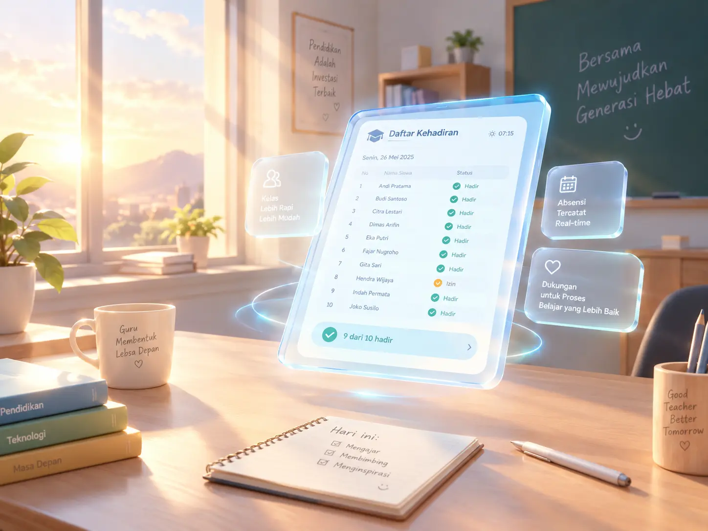

Presensi terpadu guru mapel real-time dengan Early Warning System cerdas.
Presensi per jam pelajaran tanpa tumpang tindih dengan rekonsiliasi otomatis.

Deteksi pola alpa beruntun lebih awal dengan rekomendasi tindakan tepat sasaran.
Integrasi WhatsApp Click-to-Chat transparan dengan pesan santun dan etis.
Presensi Berkeadilan, Generasi Terjaga.
Transformasi Digital Sekolah Dimulai Hari Ini.